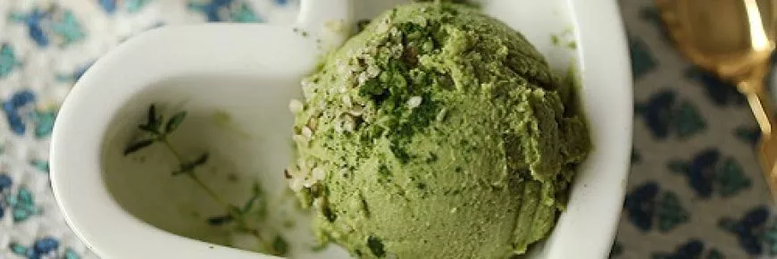

Helado de Marihuana y Ron

Descripción
El helado de marihuana y ron es una manera deliciosa de disfrutar de la frescura de un helado ahora que las
temperaturas rozan los máximos anuales, además de la chispa que aporta el ron y los efectos psicoactivos del
cannabis, ideal para compartir en reuniones con amigos y pasar unos momento inolvidables.
Ingredientes
- Medio litro de nata
- 100 gramos de azúcar
- hasta 100 ml de ron
- 3 huevos
- 4-5 gramos de marihuana bien molida o 2 gramos de hachís molido
- media vaina de vainilla
- una pica de sal
Preparación
- Empezamos poniendo una olla al fuego, a temperatura media, y añadimos la nata, la media vaina de vainilla y el
cannabis o hachís, el ron y la mitad de azúcar. Asegúrate de que la mezcla no llegue a hervir, unos 10-15 minutos es
suficiente. Retiramos del fuego y dejamos que enfríe, si podemos dejarlo una noche entera en la nevera será
mucho mejor, los sabores se mezclarán mejor consiguiendo un sabor más intenso.
- Por otro lado y ya cuando tengamos la anterior mezcla fría, separamos las claras de las yemas de los 3 huevos, las
claras las montamos al punto de nieve con la la mitad el azúcar restante y la pizca de sal, mejor con varilla y a
mano que con batidora, y reservamos. Introducir aire en el helado es importante para su cremosidad, así que
esfuérzate todo lo que puedas. Las yemas también tendrás que montarlas, con el resto del azúcar, hasta que
quede una cremita espesa.
- Sacamos de la nevera la nata con el ron, el cannabis y la vainilla, cogemos un colador y colamos esta mezcla en el
bol con las yemas montadas. Los restos vegetales de la marihuana y de la vainilla ya podremos eliminarlos, toda la
esencia y los cannabinoides estarán concentrados en la nata. Tienes que ser delicado para que las burbujas que
hemos creado montando las yemas y las claras no se rompan, así que poco a poco y con una lengua pastelera, con
movimientos lentos y envolventes, mezcla hasta que quede bien uniforme. Después, la misma operación, vuelca
lentamente y poco a poco en las claras a punto de nieve hasta que quede una base líquida pero muy cremosa. En
este paso, es hora de añadir si quieres las hojillas de menta bien cortadas, los chips de chocolate, un chorrito de
sirope dando una o dos vueltas a la mezcla para que queden unas preciosas y sabrosas vetas, ralladura de lima o
limón… tu imaginación manda.
- Y corriendo al congelador. Los congeladores domésticos no suelen trabajar con las temperaturas óptimas para
terminar nuestro helado de marihuana y ron, por lo que tendremos que ayudarle. Cada 30 minutos, sácalo del
congelador y dale unas vueltas con la lengua pastelera, siempre con cuidado, para ir rompiendo los cristales que
se irán formando por el cambio extremo de temperatura. Repite la operación cada 30 minutos durante unas 2
horas. 4 horas después de meterlo en el congelador, ya es hora de disfrutar.